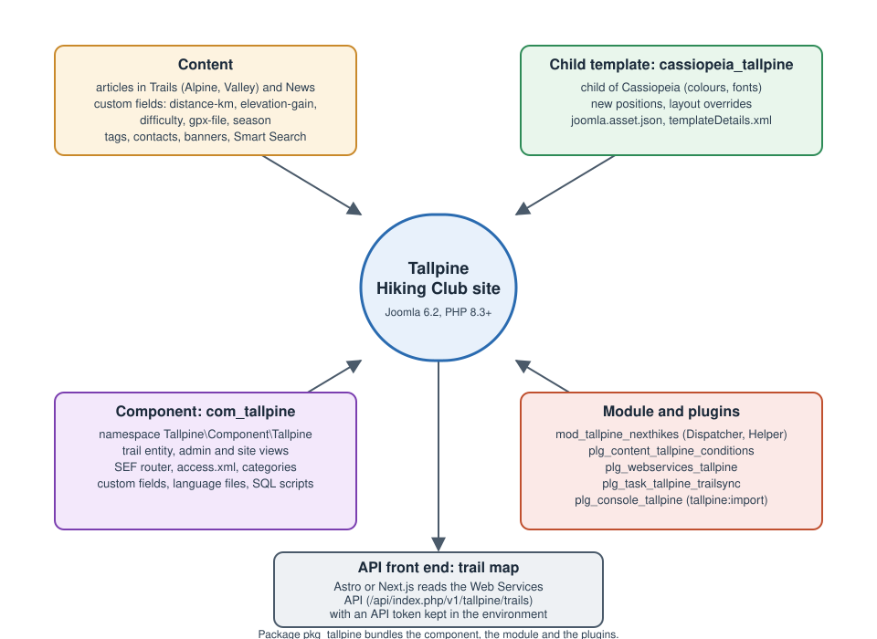

Joomla
|
This content was generated with the assistance of AI and should be verified against the official documentation before being relied on in production. |
Joomla is a free and open-source content-management system written in PHP and published under the GNU General Public License. It stores articles in categories, adds structure with custom fields, tags and workflows, shows them through menu items, templates and modules, controls who may do what with groups, access levels and an access control list, and exposes the same content through a Web Services API with token authentication. Its extension model (components, modules, plugins, templates, languages, libraries, files and packages) lets a single code base serve a small club site and a large multilingual portal. This sub-section explains Joomla from the installation on a web server to a package that adds a trail catalogue, a scheduled import and a console command, and a decoupled front end that reads the catalogue back.
Who this sub-section is for
-
Site builders and editors who write articles, organise categories and tags, add custom fields, manage media, menus and modules, set up users and access levels, run a basic editorial workflow and publish in several languages without writing code.
-
Administrators who install Joomla on Apache or nginx, edit
configuration.php, harden the site with multi-factor authentication and passkeys, keep core and extensions up to date, tune caching, back up and restore, run Joomla from the command line and troubleshoot a broken site. -
Template designers who create a child template of Cassiopeia, override layouts, define positions and module chromes, register assets with the Web Asset Manager, support colour modes, right-to-left languages and accessibility, or build a template from scratch.
-
Extension developers who write components with the namespaced MVC structure, modules with a dispatcher and a helper, plugins that subscribe to events, scheduled-task and console plugins, installer scripts and update servers, and who test, analyse and package them in a CI pipeline.
-
Architects and front-end developers who use Joomla as a content back end behind Astro or Next.js, and teams that plan a move from Joomla 3, 4 or 5 to the current series.
The running example: Tallpine Hiking Club
Every page uses one fictitious scenario, the Tallpine Hiking Club, a mountain club whose site is built step by step. The figure shows how the parts fit together.

-
Content: trail reports and news kept as articles in the nested categories Trails (with Alpine and Valley) and News. Articles carry the custom fields
distance-km,elevation-gain, adifficultylist, agpx-filemedia field andseasoncheckboxes. The tags arefamily-friendlyanddog-friendly. Contacts describe the board, banners advertise partner shops and a Smart Search index makes everything searchable. -
People: Super User, Administrator, Editor, Author and Registered member, plus a custom Trail Warden group with its own access level for member-only trail conditions, and a basic editorial workflow.
-
Languages: English (default) and German, with associations between translated items.
-
Template:
cassiopeia_tallpine, a child template of Cassiopeia with a colour scheme, fonts, new positions, overrides for the article and custom-fields layouts and ajoomla.asset.jsonfile, plus a minimal standalone template that explainstemplateDetails.xml. -
Extensions, shipped as the package
pkg_tallpine: the componentcom_tallpine(namespaceTallpine\Component\Tallpine) with atrailentity, administrator and site views, a router,access.xml, categories and custom-fields integration, Web Services API endpoints, language files and SQL scripts; the modulemod_tallpine_nexthikes; and four plugins,plg_content_tallpine_conditions,plg_webservices_tallpine,plg_task_tallpine_trailsync(a scheduled task that syncs trail closures from a fictitious park-authority API) andplg_console_tallpine(the commandtallpine:import). An installer script and an update server complete the package. -
Operations: Docker Compose with the Joomla 6.2 image, MariaDB and Mailpit locally, then staging and production with Automated Core Updates, MFA and passkeys for administrators, backups and a reverse proxy.
-
Headless: an Astro or Next.js trail map that reads the Web Services API with an API token.
No real names, tokens or credentials appear anywhere; secrets always come from environment variables or are obvious placeholders.
Version baseline
Everything in this sub-section was checked against the official documentation on 2026-10-30. The state of the platform on that date is:
| Item | State on 2026-10-30 | What the pages assume |
|---|---|---|
Joomla 6 |
6.2 is the current minor; 6.2.0 was released on 2026-10-13. 6.3 is projected for April 2027 and the bridge release 6.4 for October 2027. |
New sites start on Joomla 6.2. Examples are written for 6.2.x. |
Joomla 5 |
5.4 is the bridge release of its series and is in the security-only window (5.4.10 was the last bugfix release; security fixes continue until 2027-10-12). |
Described as the starting point of the move to 6. Upgrading Joomla 5 to 6 covers it. |
Joomla 4 and 3 |
Both series are end of life; 4.x reached its end of support in October 2025. |
No page recommends starting a new site on either. Migrating from Joomla 3 and Upgrading Joomla 4 to 5 cover the way out. |
Joomla 7 |
Not released. It follows the rule of a major every two years in October of odd years and is projected for October 2027, together with 6.4. |
Described as an upcoming event. Deprecations and Preparing for Joomla 7 explains how to get ready. |
PHP |
Joomla 6 requires PHP 8.3 or later. |
Examples use PHP 8.3 or later syntax. |
Databases |
MySQL, MariaDB and PostgreSQL are supported; Microsoft SQL Server has not been supported since Joomla 4.0. |
The Manual and the upgrade guide give different MariaDB and PostgreSQL minimums for 6.x; Requirements and Hosting states both. |
Joomla uses semantic versioning. A major release ships every two years in October of odd years and contains four minors, one every six months; the fourth minor (x.4) is a bridge release without new features and the only starting point for the next major. After x.4.0 a series gets one year of bugfixes and two of security fixes, and a minor loses support when the next one ships. Deprecated code is removed in the second major after its deprecation, and downgrades are not supported. Joomla Versions, Release Cycle and Support explains the cadence, the support windows and the projected timeline. Dates marked "projected" are plans, not facts.
Many older books and tutorials describe Joomla 3 or 4. They show the J* class aliases such as JFactory and JText
(available in Joomla 6 only through the Behaviour - Backward Compatibility 6 plugin), the $app and $db properties
of plugins (their auto-detection is removed in 7.0), generic Event::getArgument() arrays instead of concrete event
classes (since 5.0), setError() instead of exceptions, Codeception as the core test tool (core uses Cypress),
child templates as a brand-new feature and Joomla 4 as the current release.
Where Older Books and Tutorials Are Outdated lists
each point with its correction.
Where the official documentation lives
The project reorganised its documentation, and an older link often leads to a retired page.
-
The Joomla! User Guide at guide.joomla.org is the current documentation for site builders and administrators: every screen, field and option of the administrator interface.
-
The Joomla! Developer Manual at manual.joomla.org is the current documentation for developers: the architecture, extension development, the Web Services API, coding standards and the migration and update notes of each version. Some pages (for example the lifecycle and the Web Services API) are still short, so the pages of this sub-section also cite the source tree of the CMS on GitHub, and the API reference at api.joomla.org for classes.
-
The project’s developer site at developer.joomla.org holds the roadmap, the strategy documents and the Security Centre with the security announcements.
-
Release announcements are published at joomla.org and the Joomla Community Magazine reports on features and events.
-
The legacy wiki at docs.joomla.org still ranks high in search results, but its pages mark themselves as obsolete. These pages cite it only where nothing newer exists, and say so.
What’s covered
Getting Started
What Joomla is and how it is built, how releases and support work, what a server needs, how to install it with the public folder, a local Docker Compose stack and the administrator dashboards and Guided Tours.
Using Joomla
Building a site without code: articles, categories and tags, custom fields, media, menus, modules and positions, users and access levels, workflows, languages, Smart Search, SEO and SEF URLs, contacts and banners, mail templates, scheduled tasks, privacy tools and global configuration.
Administration
Running a site: configuration.php and .htaccess, web server and HTTPS, installing and updating extensions, updating Joomla and Automated Core Updates, caching, the command line, hardening with MFA and passkeys, backups, multi-site options and troubleshooting.
Templates
Choosing and customising templates: styles, Cassiopeia and its child templates, overrides, layouts and module chromes, the Web Asset Manager, building a template from scratch, colour modes and accessibility, error and offline pages, the Atum administrator template and third-party frameworks.
Extension Development
Writing extensions: types, manifests and packaging, namespaces and dependency injection, components, modules, plugins and events, forms, the database, ACL, language files, installer scripts, update servers, security, scheduled-task and console plugins, and error handling.
Web Services API
Using Joomla as a content back end: the core API with tokens, extending it from a component and reading it from a decoupled trail-map front end.
Tooling & Delivery
Coding standards and static analysis, automated tests, debugging and building and releasing an extension in CI.
Upgrades
Moving forward: Joomla 3 to the current series, 4 to 5, 5 to 6 with Backward Compatibility 6 and preparing for Joomla 7.
AI and Roadmap
What the project plans for AI and the Model Context Protocol, described as plans rather than shipped features.
Reading path
Related material on this site
| Page | Why it is related |
|---|---|
The overview of all CMS sub-sections. |
|
Cross-CMS metrics and a decision table; the Joomla decision guide links to it instead of repeating it. |
|
Sibling sub-sections, for the cases where another CMS fits better. |
|
The other PHP CMS sub-section of this site. |
|
PHP web development; its introduction places Joomla among PHP platforms. |
|
The language itself: Composer, PSR standards, PHPUnit, static analysis, OPcache and debugging. |
|
Server-side frameworks as an alternative to a CMS. |
|
Docker and Kubernetes |
Containers and orchestration behind Local Development with Docker. |
MySQL, MariaDB and PostgreSQL background, and the Redis cache back end. |
|
The front end of the trail map and the cross-origin rules it needs. |
|
Background for Colour Modes, RTL and Accessibility. |
|
Browser-level testing tools used next to Joomla’s own Cypress system tests. |
|
Background for the token-based access of the Web Services API. |
|
Background for AI, MCP and the Roadmap. |
|
Online shops; Joomla shop extensions are out of scope here. |
Bibliography
Every source below is the official site, repository, release note or documentation page of the product, library or
service it supports, and each entry links to it. The links were collected on 2026-10-30 from the == References section
of every page in this sub-section, where each page lists the exact pages its facts and examples derive from. Joomla
documentation is revised continuously: open an entry and confirm its content and version before you rely on it. Where this
bibliography and a page’s own References section appear to disagree, the official documentation linked from the page
wins. An entry marked "(unverified)" is a publisher link built from the book’s ISBN that was not confirmed on
2026-10-30; if it does not open, search the publisher’s site for the ISBN.
Books
These books were compared with the official documentation for structure, recipes and operational practice. They describe Joomla 5.0 and Joomla 4.x, so where they disagree with the current documentation the pages say so in their own words, and Where Older Books and Tutorials Are Outdated collects the corrections. No text, code or figure is copied from them.
-
Carlos M. Cámara Mora, Developing Extensions for Joomla! 5 (Packt Publishing, 2023), ISBN 978-1-80461-799-1: Packt product page (unverified).
-
Luca Marzo, Joomla! 4 Masterclass (Packt Publishing, 2023), ISBN 978-1-80323-897-5: Packt product page (unverified).
Joomla! User Guide
-
Joomla User Guide: Joomla 5 to 6 planning and upgrade step by step
-
Joomla User Guide: Customising the Smart Search results page
-
Joomla User Guide: Setting up automatic Smart Search indexing
-
Joomla User Guide: Workflow Example 1, a newsletter workflow
-
Joomla User Guide: Multiple Domains and Web Sites in a single Joomla! installation
-
Joomla User Guide: Joomla 4 to 5 Planning and Upgrade Step by Step
-
Joomla User Guide: Joomla 5 to 6 planning and upgrade step by step
-
Joomla User Guide: Joomla 3 to 4 Planning and Migration Step by Step
Joomla! Developer Manual
-
Joomla Manual: Component tutorial, Step 4 Using the Database
-
Joomla Manual: Component tutorial, Step 6 Administrator List
-
Joomla Manual: Component tutorial, Step 7 Administrator Edit
-
Joomla Manual: Component tutorial, Step 8 Using Higher-level MVC Classes
-
Joomla Manual: Component tutorial, Step 12 Filtering, Pagination and Column Ordering
-
Joomla Manual: Module Development Tutorial, Step 1 Basic Module
-
Joomla Manual: Module Development Tutorial, Step 2 Adding a tmpl file
-
Joomla Manual: Module Development Tutorial, Step 3 Adding a helper file
-
Joomla Manual: Module Development Tutorial, Step 4 Adding Languages
-
Joomla Manual: Query Results after Selecting Data from the Database
-
Joomla Manual: Setup your testing environment (System Testing)
-
Joomla Manual: Setup your testing environment (Unit Testing)
-
Joomla Manual: About Updates and Upgrades documentation (deprecation policy)
-
Joomla Manual: Removed and Backward Compatibility (4.4 to 5.0)
-
Joomla Manual: Removed and Backward Incompatibility (5.4 to 6.0)
-
Joomla Manual: Removed and Backward Incompatibility (6.4 to 7.0)
Joomla release news and community magazine
Joomla developer site (roadmap, strategy and Security Centre)
-
Planned feature: Build MCP servers to enable AI usage, with WCAG in mind
-
Planned feature: Investigate if and how to integrate the AI Framework
-
Security Centre: Arbitrary directory deletion via cache purge action
-
Security Centre: Improper ACL checks for various webservice edit tasks
-
Security Centre: XSS filter bypass in InputFilter via HTML5 entity decode mismatch
Joomla source code and repositories
-
joomla-cms 6.1-dev: administrator/components/com_content/services/provider.php
-
joomla-cms 6.1-dev: administrator/templates/atum/templateDetails.xml
-
joomla-cms 6.2-dev: administrator/components/com_banners/config.xml
-
joomla-cms 6.2-dev: administrator/components/com_banners/services/provider.php
-
joomla-cms 6.2-dev: administrator/components/com_banners/src/Controller/BannerController.php
-
joomla-cms 6.2-dev: administrator/components/com_banners/src/Controller/BannersController.php
-
joomla-cms 6.2-dev: administrator/components/com_banners/src/Extension/BannersComponent.php
-
joomla-cms 6.2-dev: administrator/components/com_banners/src/Model/BannerModel.php
-
joomla-cms 6.2-dev: administrator/components/com_banners/src/Table/BannerTable.php
-
joomla-cms 6.2-dev: administrator/components/com_banners/src/View/Banner/HtmlView.php
-
joomla-cms 6.2-dev: administrator/components/com_banners/tmpl/banner/edit.php
-
joomla-cms 6.2-dev: administrator/components/com_banners/tmpl/banners/default.php
-
joomla-cms 6.2-dev: administrator/components/com_contact/config.xml
-
joomla-cms 6.2-dev: administrator/components/com_contact/contact.xml
-
joomla-cms 6.2-dev: administrator/components/com_contact/forms/contact.xml
-
joomla-cms 6.2-dev: administrator/components/com_contact/services/provider.php
-
joomla-cms 6.2-dev: administrator/components/com_contact/src/Helper/AssociationsHelper.php
-
joomla-cms 6.2-dev: administrator/components/com_contact/src/Table/ContactTable.php
-
joomla-cms 6.2-dev: administrator/components/com_content/access.xml
-
joomla-cms 6.2-dev: administrator/components/com_content/config.xml
-
joomla-cms 6.2-dev: administrator/components/com_content/forms/category.xml
-
joomla-cms 6.2-dev: administrator/components/com_content/src/Extension/ContentComponent.php
-
joomla-cms 6.2-dev: administrator/components/com_content/src/Model/ArticleModel.php
-
joomla-cms 6.2-dev: administrator/components/com_fields/src/Field/FieldLayoutField.php
-
joomla-cms 6.2-dev: administrator/components/com_fields/src/Helper/FieldsHelper.php
-
joomla-cms 6.2-dev: administrator/components/com_installer/config.xml
-
joomla-cms 6.2-dev: administrator/components/com_installer/src/Helper/InstallerHelper.php
-
joomla-cms 6.2-dev: administrator/components/com_installer/src/Model/ManageModel.php
-
joomla-cms 6.2-dev: administrator/components/com_installer/src/Model/UpdatesitesModel.php
-
joomla-cms 6.2-dev: administrator/components/com_joomlaupdate/src/Model/UpdateModel.php
-
joomla-cms 6.2-dev: administrator/components/com_media/config.xml
-
joomla-cms 6.2-dev: administrator/components/com_modules/config.xml
-
joomla-cms 6.2-dev: administrator/components/com_scheduler/config.xml
-
joomla-cms 6.2-dev: administrator/language/en-GB/plg_task_requests.ini
-
joomla-cms 6.2-dev: administrator/manifests/files/joomla.xml
-
joomla-cms 6.2-dev: administrator/templates/atum/templateDetails.xml
-
joomla-cms 6.2-dev: api/components/com_banners/src/Controller/BannersController.php
-
joomla-cms 6.2-dev: api/components/com_banners/src/View/Banners/JsonapiView.php
-
joomla-cms 6.2-dev: api/components/com_content/src/Controller/ArticlesController.php
-
joomla-cms 6.2-dev: api/components/com_media/src/Controller/MediaController.php
-
joomla-cms 6.2-dev: components/com_contact/src/Controller/ContactController.php
-
joomla-cms 6.2-dev: components/com_contact/src/Service/Category.php
-
joomla-cms 6.2-dev: components/com_content/src/View/Article/HtmlView.php
-
joomla-cms 6.2-dev: components/com_fields/layouts/field/render.php
-
joomla-cms 6.2-dev: installation/src/Console/InstallCommand.php
-
joomla-cms 6.2-dev: libraries/src/Console/AutomatedUpdatesRegisterCommand.php
-
joomla-cms 6.2-dev: libraries/src/Console/AutomatedUpdatesUnregisterCommand.php
-
joomla-cms 6.2-dev: libraries/src/Console/ChangeUserPasswordCommand.php
-
joomla-cms 6.2-dev: libraries/src/Console/CheckUpdatesCommand.php
-
joomla-cms 6.2-dev: libraries/src/Console/CleanCacheCommand.php
-
joomla-cms 6.2-dev: libraries/src/Console/FinderIndexCommand.php
-
joomla-cms 6.2-dev: libraries/src/Console/ListUserCommand.php
-
joomla-cms 6.2-dev: libraries/src/Console/RemoveOldFilesCommand.php
-
joomla-cms 6.2-dev: libraries/src/Console/SessionGcCommand.php
-
joomla-cms 6.2-dev: libraries/src/Console/SessionMetadataGcCommand.php
-
joomla-cms 6.2-dev: libraries/src/Console/SetConfigurationCommand.php
-
joomla-cms 6.2-dev: libraries/src/Console/SiteDownCommand.php
-
joomla-cms 6.2-dev: libraries/src/Dispatcher/ComponentDispatcher.php
-
joomla-cms 6.2-dev: libraries/src/Installer/InstallerScript.php
-
joomla-cms 6.2-dev: libraries/src/Installer/InstallerScriptInterface.php
-
joomla-cms 6.2-dev: libraries/src/MVC/Controller/FormController.php
-
joomla-cms 6.2-dev: libraries/src/MVC/Model/WorkflowBehaviorTrait.php
-
joomla-cms 6.2-dev: libraries/src/Workflow/WorkflowServiceInterface.php
-
joomla-cms 6.2-dev: plugins/api-authentication/token/src/Extension/Token.php
-
joomla-cms 6.2-dev: plugins/behaviour/taggable/src/Extension/Taggable.php
-
joomla-cms 6.2-dev: plugins/behaviour/versionable/src/Extension/Versionable.php
-
joomla-cms 6.2-dev: plugins/content/joomla/src/Extension/Joomla.php
-
joomla-cms 6.2-dev: plugins/system/cache/services/provider.php
-
joomla-cms 6.2-dev: plugins/system/jooa11y/src/Extension/Jooa11y.php
-
joomla-cms 6.2-dev: plugins/system/redirect/src/Extension/Redirect.php
-
joomla-cms 6.2-dev: plugins/system/tasknotification/src/Extension/TaskNotification.php
-
joomla-cms 6.2-dev: plugins/task/deleteactionlogs/services/provider.php
-
joomla-cms 6.2-dev: plugins/task/deleteactionlogs/src/Extension/DeleteActionLogs.php
-
joomla-cms 6.2-dev: plugins/task/requests/forms/get_requests.xml
-
joomla-cms 6.2-dev: plugins/webservices/banners/services/provider.php
-
joomla-cms 6.2-dev: plugins/webservices/banners/src/Extension/Banners.php
-
joomla-cms 6.2-dev: plugins/webservices/content/src/Extension/Content.php
-
joomla-cms 6.2-dev: templates/cassiopeia/html/layouts/chromes/card.php
-
joomla-cms 6.2-dev: templates/cassiopeia/templateDetails.xml
-
joomla-cms 6.2-dev: templates/cassiopeia_extended/templateDetails.xml
-
joomla-cms 6.2-dev: tests/System/integration/administrator/components/com_banners/Banner.cy.js
-
joomla-cms 6.2-dev: tests/System/integration/api/com_banners/Banners.cy.js
-
joomla-cms 6.2-dev: tests/Unit/Plugin/Content/ConfirmConsent
-
joomla-cms: com_content Router.php (reference RouterView implementation)
-
Joomla CMS pull request 45062: CMSPlugin lazy object feature (6.1)
-
Joomla CMS pull request 46379: "nocache" web asset version (6.1)
-
joomla-cms: libraries/src/Component/Router (RouterView, RouterViewConfiguration, Rules)
-
Joomla CMS source: mod_articles_latest, a core module in this design
-
joomla-cms 6.2-dev: administrator com_banners (reference component)
-
joomla-cms 6.2-dev: ContentComponent, the reference integration
-
joomla-cms source: com_templates (TemplateModel, Updated Files tab)
-
joomla-cms 6.2-dev: libraries/src (Categories, Fields, Tag, Versioning, Workflow, Association)
-
joomla-cms source: Quick Icon - Overrides Update Notification plugin
-
Joomla source: task plugins (privacyconsent, deleteactionlogs)